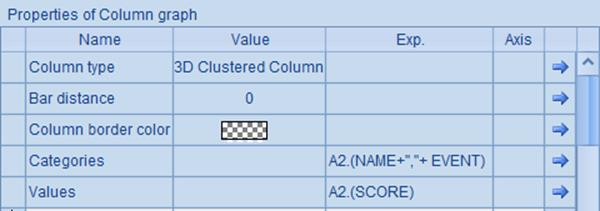

12.10.1 Displaying charts on web
The esProc G.draw() function returns a plotted chart as a byte array that is used to generate the image on the web page.
A simple plotting algorithm (ChartGYM.dfx) for a column chart showing results of athletes:
|
|
A |
|
1 |
=canvas() |
|
2 |
=demo.query("select * from GYMSCORE where NAME=?",name) |
|
3 |
=A1.plot("BackGround") |
|
4 |
=A1.plot("EnumAxis","name":"x","xEnd":0.9,"xPosition":0.7) |
|
5 |
=A1.plot("NumericAxis","name":"y","location":2,"yStart":0.7) |
|
6 |
=A1.plot("Column","axis1":"x","data1":A2.(EVENT),"axis2":"y", "data2":A2.(SCORE)) |
|
7 |
=A1.plot("Text","text":name,"textFont":"Arial","textStyle":3,"textSize":16,"textColor":-10092340,"data1":0.5,"data2":-30) |
|
8 |
return A1.draw@p(450,200) |
This is similar to the plotting algorithm used in The Column Element, from which more information can be learned. Here name is a cellset parameter for specifying the athlete name:

The plotted chart needs to be returned through the return function to be invoked by a web application.
The plotting algorithm doesn¡¯t involve a hyperlink. The hyperlink properties will be covered in the next section. Now to display the chart plotted by the algorithm on the web, follow these deploying instructions:
1) Deploy testChart application in apache-tomcat-6.0.43.
<Context path="/testChart" docBase="D:\tools\apache-tomcat-6.0.43\testChart" debug="0" privileged="true">
</Context>
2) Under the application directory testChart, place jars that esProc requires, including basic jars and the hsql driver hsqldb-2.2.8.jar, as well as the required configuration file raqsoftConfig.xml. See Deploying JDBC for more details.
3) Prepare a class com.SaveChart to store the image data during running the program, using the following code:
package com;
import java.util.HashMap;
public class SaveChart {
private static HashMap<String, byte[]> chartMap = new HashMap();
public static void addChart(String id, byte[] bytes) {
chartMap.put(id, bytes);
}
public static byte[] getChart(String id) {
return chartMap.get(id);
}
public static void clear() {
chartMap.clear();
}
}
The class uses the static method addChart to store an array of bytes of the image, and getChart to retrieve the data. After the code is compiled, deploy the class in the WEB-INF/classes/com path under the application directory.
4) Under the application directory, prepare a readChart.jsp file to read in the specified PNG image from the SavaChart class:
<%@page contentType="text/html; charset=iso-8859-1" language="java" import="com.SaveChart, java.io.*" errorPage=""%>
<!DOCTYPE html>
<%
String chartID = request.getParameter("id");
byte[] image = SaveChart.getChart(chartID);
try {
response.setContentType("image/png");
OutputStream os = response.getOutputStream();
os.write(image);
os.close();
}
catch (Exception e) {
}
%>
In the readChart.jsp file, pass the serial number of the specified image through the parameter id.
5) In the application directory, prepare testChart.jsp file for computing the specified script file, store the resulting byte array of the image in SaveChart and call readChart.jsp to display the image:
<%@page contentType="text/html; charset=iso-8859-1" language="java" import="java.sql.*, com.SaveChart" errorPage=""%>
<!DOCTYPE html>
<%
String dfx = request.getParameter("dfx");
String arg = request.getParameter("arg");
Connection con = null;
java.sql.PreparedStatement st;
String chartID = "testChart";
try {
Class.forName("com.esproc.jdbc.InternalDriver");
con= DriverManager.getConnection("jdbc:esproc:local://");
String callSpl = dfx;
// Allow one parameter that can be called using the method of call spl(arg)
if (arg != null) {
callSpl += "(\""+arg+"\")";
}
else {
callSpl += "()";
}
st =con.prepareCall("call "+callSpl);
st.execute();
ResultSet rs = st.getResultSet();
rs.next();
byte[] image = (byte[]) rs.getObject(1);
SaveChart.addChart(chartID, image);
}
catch (Exception e) {
}
finally {
if (con != null) {
try {
con.close();
}
catch (Exception e) {
e.printStackTrace();
}
}
}
%>
<html>
<head>
<meta http-equiv="Content-Type" content="text/html; charset=gb2312">
<title>testChart</title>
</head>
<body>
<img src="readChart.jsp?id=<%=chartID%>">
</body>
</html>
In testChart.jsp, pass the serial number of the specified image through the parameter dfx; and a parameter arg is allowed to be set. See Java Invocation for information about calling a script file to perform related computations.
Launch Tomcat to display the chart plotted using the plotting algorithm above. Enter the URL - http://localhost:8080/testChart/testChart.jsp?dfx=ChartGYM&arg=Ana Silva - into the web browser and you¡¯ll see the following result:
